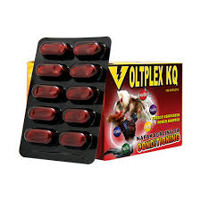

| 💊 VOLFLEX 💊 |
|  |
VOLFLEX 💰 Price: ₱12 per piece 📌 Description: Volflex is a supplement formulated to help improve flexibility, strength, and endurance of animals. It supports better movement and overall physical condition. ✅ Benefits: • Improves flexibility and mobility • Supports muscle strength • Helps reduce body stress • Maintains overall health 🐔🐶 Suitable For: Poultry and other livestock 🕒 Usage Guide: Give as directed or follow recommended dosage. Always provide clean water. |